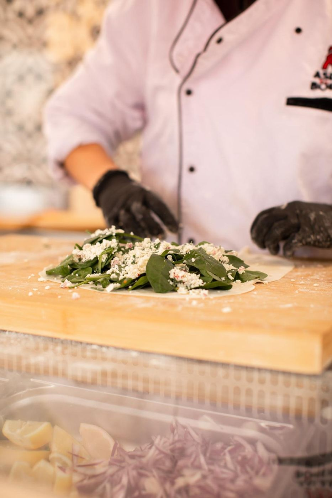
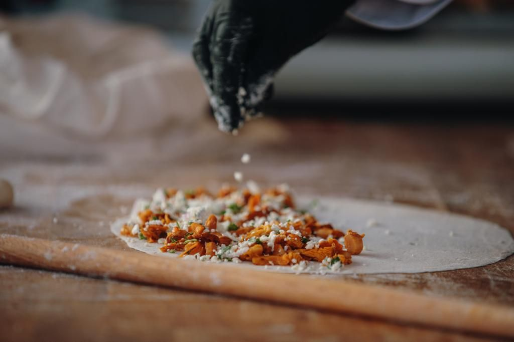
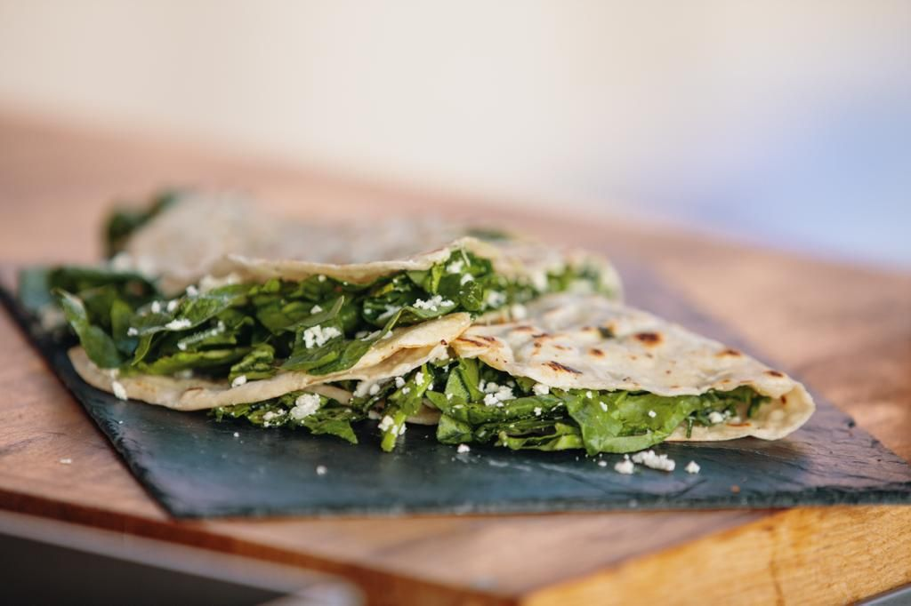
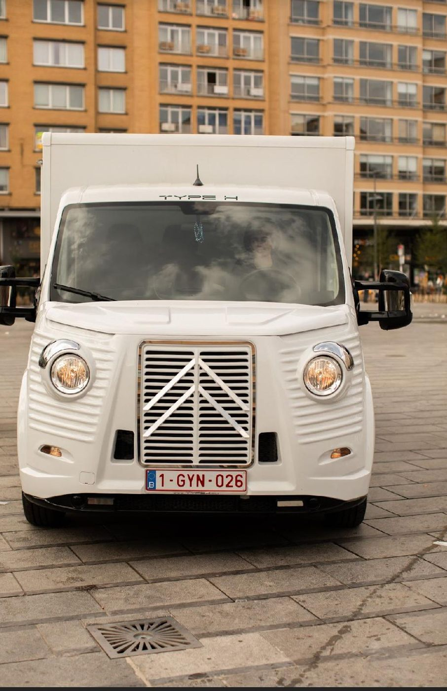
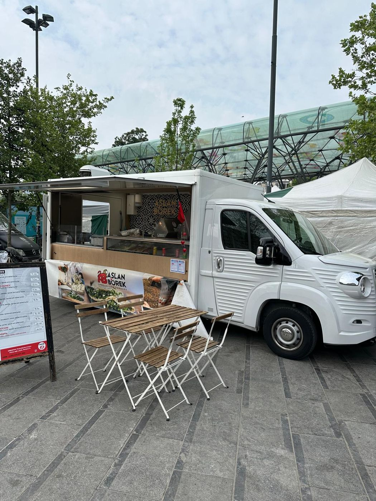
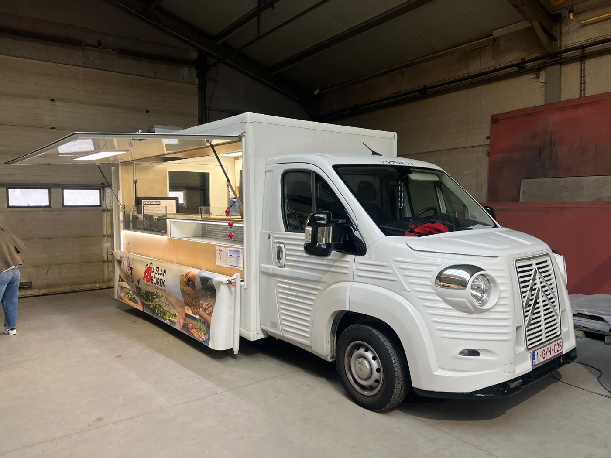
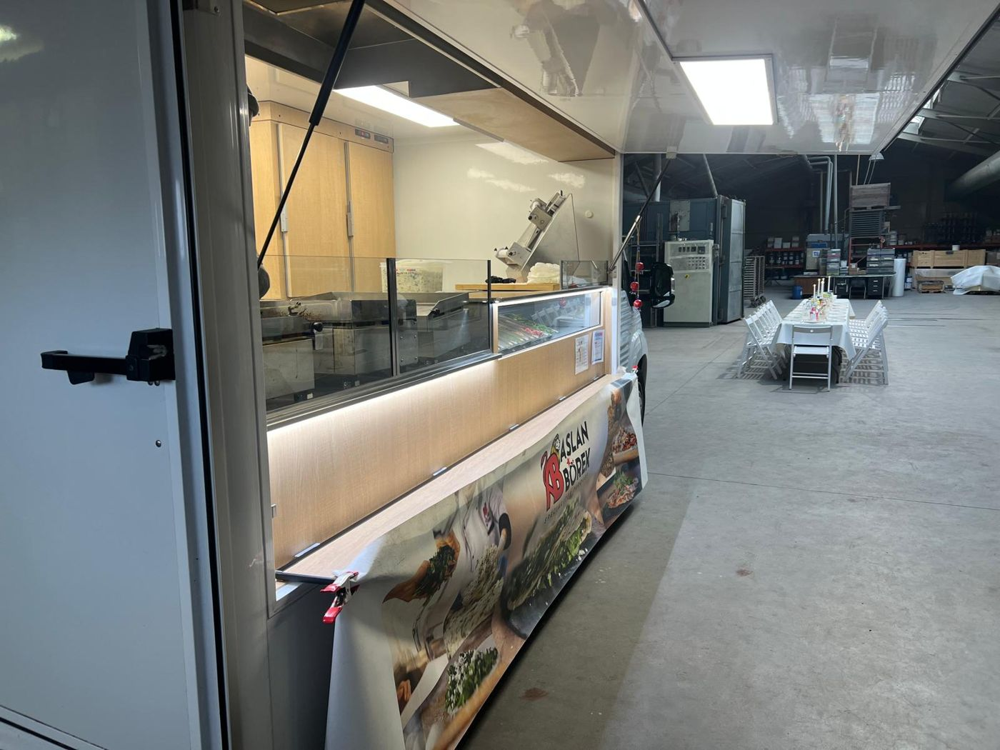

AslanBörek
Des börek turcs roulés à la main et cuits devant vous, sur les marchés et à vos événements.
 Pâte à pain faite maison
Pâte à pain faite maison
Préparé sous vos yeux
Chaque börek part d'une boule de pâte à pain, étalée à la main sur la planche. On garnit avec des produits frais et locaux, puis on cuit sur la plaque avec une noisette de beurre salé.

Fine comme une feuille, directement sur la planche farinée.

Feta, oignons, persil, épices et la garniture de votre choix.

Doré sur la plaque, plié, prêt à manger.



Un Type H qui sent bon le four
Notre cuisine roule dans un camion Type H tout blanc. Ouvrez l'œil sur les marchés : quand vous voyez la faïence bleue et le lion rouge, c'est nous.
Le camion à votre événement
Mariage, anniversaire, fête d'entreprise : on installe le camion chez vous et on cuit les börek en direct pour vos invités.
- Cuisson sur place, servi chaud
- Carte végétarienne et viande
- Intérieur comme extérieur
